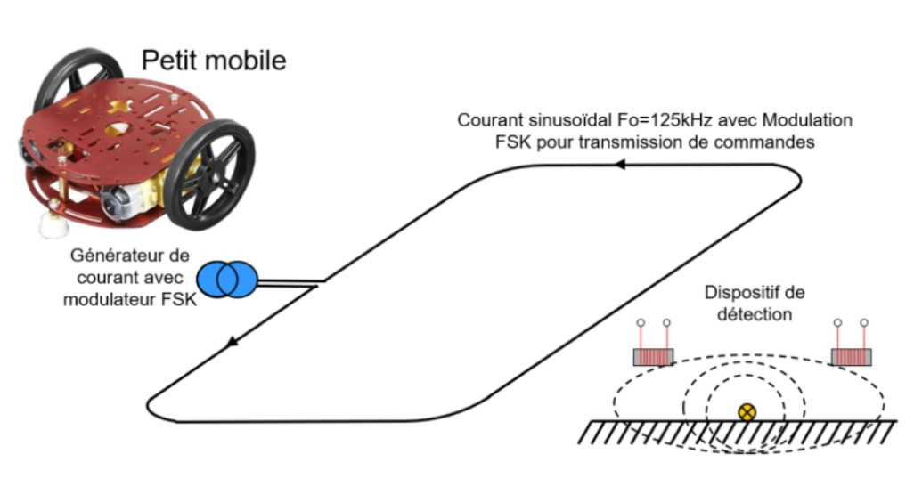
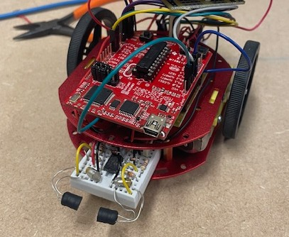
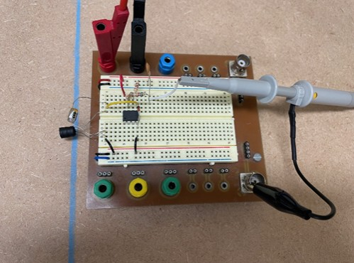
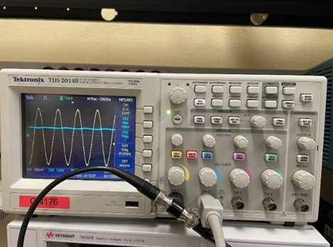
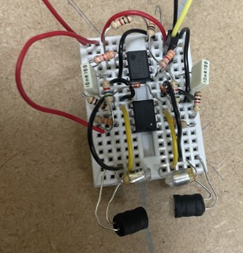
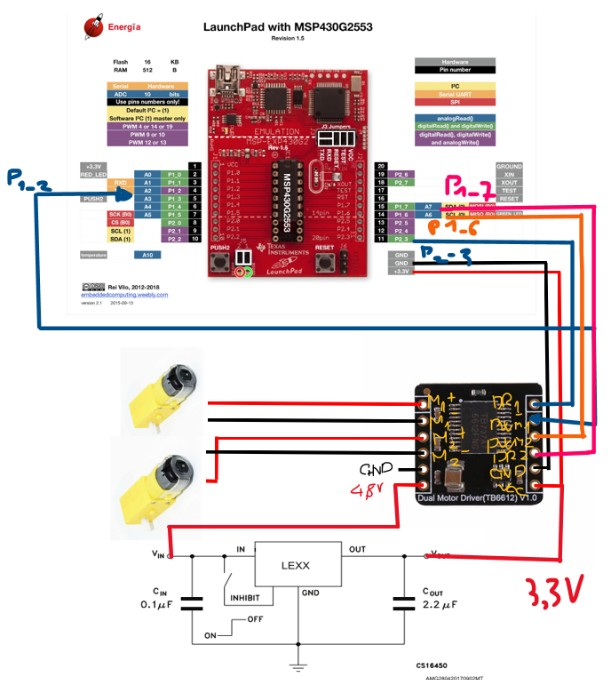
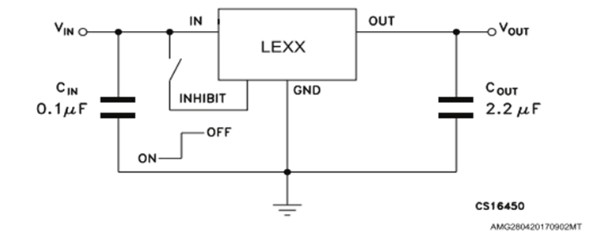
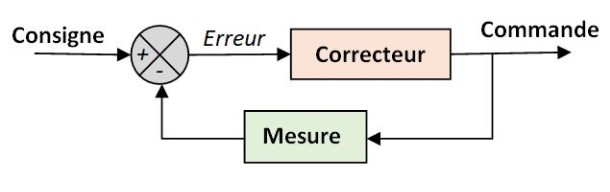
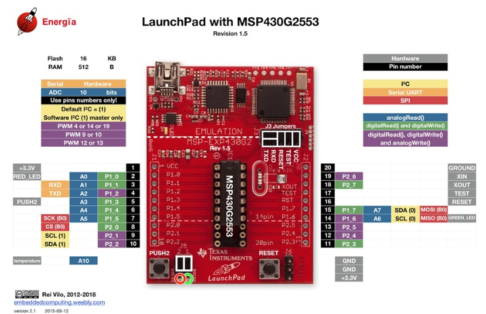
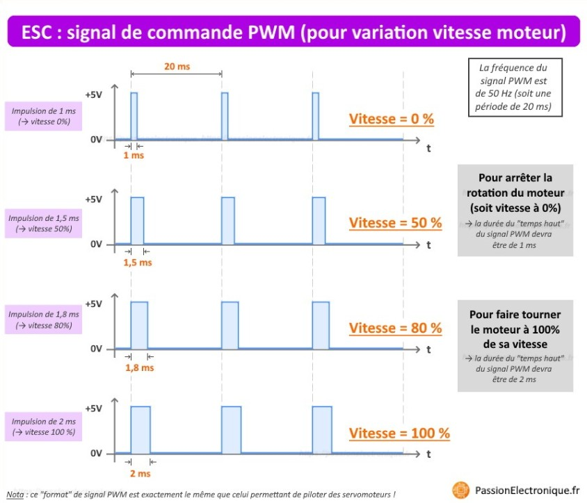

Filo : le robot filoguidé
Dans cette rubrique, nous vous parlerons du projet FILO dont son nom est tiré de la technique utilisée pour guider le robot (le filoguidage). Le but de ce projet est de créer un petit robot mobile capable de se déplacer en totale autonomie en suivant une piste tracée par un conducteur électrique. Dans notre cas, nous serons à FO = 88 kHz.
FILO utilise un asservissement proportionnel pour suivre le fil au sol. Les deux bobines à l’avant comparent l’intensité du signal qu’elles captent : si le robot s’écarte d’un côté, l’écart entre les signaux augmente. Le système ajuste alors automatiquement la vitesse des moteurs pour le recentrer. Ainsi, FILO corrige sa trajectoire en temps réel et reste parfaitement aligné sur le fil.
Le filtrage du signal
Pour permettre au microcontrôleur de lire correctement le signal, il est nécessaire de le lisser. L’objectif est d’obtenir une valeur stable, ou « continue », à partir d’un signal potentiellement bruité ou variable. Pour cela, nous utilisons un filtre passe-bas, qui permet d’extraire la valeur moyenne du signal.
1. Définir le temps de réponse souhaité
Le temps de réponse du système dépend directement de la fréquence de coupure du filtre. La relation entre les deux est la suivante :
trép = 2,2 / fc
Nous avons choisi un temps de réponse de 1 ms afin que le système soit suffisamment réactif.
2. Calculer la fréquence de coupure
fc = 0,35 / 1 ms = 350 Hz
3. Dimensionner le filtre RC
fc = 1 / (2πRC)
On en déduit donc : RC = 1 / (2π × fc). Il suffit ensuite de choisir une combinaison de résistance et de condensateur respectant cette valeur RC.
4. Câbler le filtre
Une fois les composants sélectionnés, le filtre est monté avec une résistance en série suivie d’un condensateur relié à la masse. Ce montage permet d’obtenir un signal lissé, prêt à être lu par le microcontrôleur.
Signal redressé
En sortie de ce montage, on obtient la valeur moyenne du signal, soit (Umax/π). On va maintenant pouvoir dupliquer notre montage dans le but de réaliser l’asservissement du robot.
Montage électronique du module capteur
Pour étendre la capacité de détection du système, il est nécessaire de dupliquer la première partie du montage afin d’intégrer une seconde bobine. Ensuite, un amplificateur non inverseur doit être ajouté pour fournir une tension de 3,3 V. Cette amplification garantit une lecture précise des signaux provenant des bobines.
Assemblage du robot
Nous passons ensuite à l’assemblage des roues du robot FiLo. Dans cette étape, le schéma de câblage est présenté en détail, en expliquant comment chaque composant est connecté pour permettre le déplacement du robot.
Dans cette étape, nous avons assemblé les composants nécessaires pour permettre au robot de se déplacer sur la piste.
- La carte driver DRI0044-A
- Le microcontrôleur MSP430G2553
- Moteurs DC-DC
La carte driver DRI0044-A et le microcontrôleur fonctionnent sous une tension de 3,3 V, tandis que les moteurs sont alimentés en 5 V.
Afin d’éviter l’utilisation de deux sources d’alimentation distinctes, nous avons intégré un convertisseur DC-DC LE33ABD, permettant de passer de 5,2 V à 3,3 V.
L'asservissement du robot
Les deux bobines captent l’intensité du signal provenant du fil et déterminent si le robot est centré ou s’il dévie.
Chaque moteur est contrôlé par deux entrées qui déterminent le sens de rotation. La vitesse est régulée par PWM.
Microcontrôleur
Le MSP430G2553 est un microcontrôleur 16 bits à très faible consommation, permettant de traiter les signaux des capteurs et commander les moteurs.
Contrôle des moteurs
Pour modifier la vitesse des moteurs, on utilise un signal PWM (Pulse Width Modulation).
Programmation du robot filoguidé
Étape 1 : Récupération des données
int valeurBobine1 = analogRead(A0);
int valeurBobine2 = analogRead(A4);Étape 2 : Programmation de la carte Dual Motor Driver TB6612
digitalWrite(pinSensMoteur1, 1);
digitalWrite(pinSensMoteur2, 0);
analogWrite(PWM1, vitesse);
analogWrite(PWM2, vitesse);